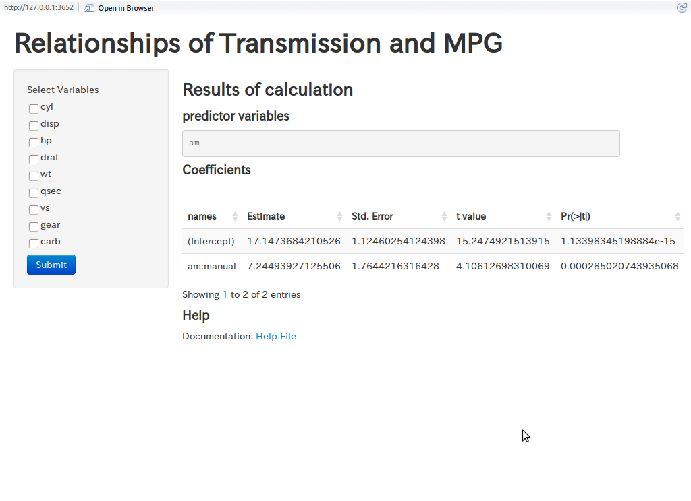

Application for Calculating Relationships of Transmission and MPG
Date: 2014/12/21
Date: 2014/12/21
Many peaple are interested in exploring the relationship between a set of variables and miles per gallon (MPG). They are particularly interested in the following two questions:
This application can calculate coefficients of multiple model fittings.
You can select variables as predectors for mph interactively.

## Estimate Std. Error t value Pr(>|t|)
## (Intercept) 17.147 1.125 15.247 1.134e-15
## am:manual 7.245 1.764 4.106 2.850e-04
## Estimate Std. Error t value Pr(>|t|)
## (Intercept) 34.522 2.6032 13.262 7.694e-14
## am:manual 2.567 1.2914 1.988 5.635e-02
## cyl -2.501 0.3608 -6.931 1.285e-07